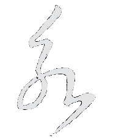

jFinancialModel
A pure javascript financial model generator, inspired by the
speech
by Bret Victor, powered by the excellent framework
slickgrid
.
coffee(script) Tetris
A tetris game written in coffeescript.